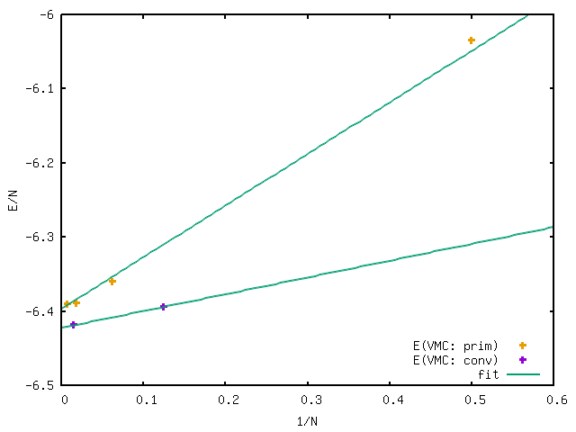
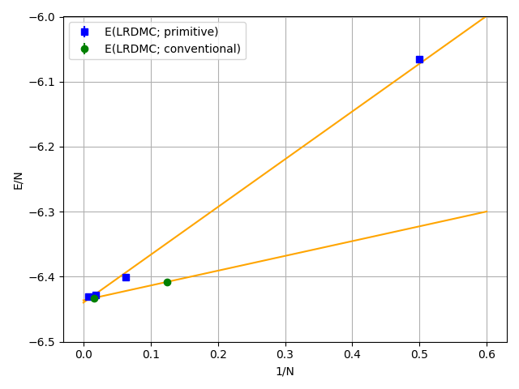

c-BN (primitive cell) with a Jastrow–Slater single-determinant ansatz via VMC and LRDMC using ECPs: two-body finite-size corrections
00 Introduction
In this tutorial, you will perform VMC/LRDMC calculations for c-BN (primitive cell) under PBCs, starting from PySCF with ccECPs. You will carry out supercell extrapolation using 1×1×1, 2×2×2, 3×3×3, and 4×4×4 supercells to mitigate the so-called two-body finite-size errors. All input and output files for this tutorial can be downloaded here.
01 DFT
The first step of this tutorial is to generate a JDFT ansatz using PySCF. A Python script will be presented later. The procedure is as follows:
Run the PySCF calculation:
cd s_1_1_1/01_trial_wavefunction python3 pyscf_cBN.pyThe difference from the code for the conventional cell calculation is the definition of the cell.
Convert the generated PySCF checkpoint file to a TREXIO file:
trexio convert-from -t pyscf -i cBN.chk -b hdf5 cBN.hdf5
Convert the TREXIO file to a TurboRVB wavefunction file:
trexio-to-turborvb cBN.hdf5 -jasbasis cc-pVDZ -jascutbasis
Then, you will have the TurboRVB wavefunction file fort.10 as well as the pseudopotential file pseudo.dat.
Note
When the PySCF calculation fails:
Check if the basis set is available,
Ensure that the sufficient memory allocation is available.
02 Jastrow optimization
The second step is to optimize the Jastrow factor at the VMC level using vmcopt module of TurboGenius.
One should refer to the Hydrogen tutorial for the details.
Here, only needed commands are shown.
Copy the wavefunction file and the pseudopotential file:
cd ../../02_optimization/ cp ../01_trial_wavefunction/fort.10 . cp ../01_trial_wavefunction/pseudo.dat . cp fort.10 fort.10_dft
Generate an input file datasmin.input:
turbogenius vmcopt -g -opt_onebody -opt_twobody -opt_jas_mat -optimizer lr -vmcsteps 300 -steps 100 -nw 1024
Run the optimization:
export TURBOVMC_RUN_COMMAND="mpirun -np 16 turborvb-mpi.x" turbogenius vmcopt -rSee Note in the optimization step for the ways to run the calculations.
Perform the postprocess and plot the results:
turbogenius vmcopt -post -optwarmup 20 -plot
Check plot_energy_and_devmax.png and the files in the parameters_graphs directory.
03 JDFT ansatz - VMC
The next step is to run a single-shot VMC calculation. This is done using the vmc module of TurboGenius.
First, prepare the wavefunction and related files:
cd ../03_vmc/
cp ../02_optimization/fort.10 .
cp ../02_optimization/pseudo.dat .
Next, generate an input file datasvmc.input using:
turbogenius vmc -g -steps 1000 -nw 128
Then, run the VMC calculation:
TURBOVMC_RUN_COMMAND="mpirun -np 16 turborvb-mpi.x"
export TURBOVMC_RUN_COMMAND
turbogenius vmc -r
Finally, run the postprocess:
turbogenius vmc -post -bin 10 -warmup 5
Check the reblocked total energy and error in the file pip0.d.
04 JDFT ansatz - LRDMC
Now we proceed to the lattice regularized diffusion Monte Carlo calculation that can improve a trial wavefunction obtained by a DFT calculation or a VMC optimization. One should refer to the Hydrogen tutorial for the details.
In this section, we will perform the calculation at the lattice constant alat=0.20. First, copy the prepared wavefunction and the pseudopotential files:
# LRDMC run
cd ../04_lrdmc/
cp ../03_vmc/fort.10 .
cp ../03_vmc/pseudo.dat .
Next, generate an input file datasfn.input for the LRDMC calculation:
turbogenius lrdmc -g -etry -51.00 -alat -0.20 -steps 1000 -nw 128
Then, run the calculation by typing:
TURBOVMC_RUN_COMMAND="mpirun -np 16 turborvb-mpi.x"
export TURBOVMC_RUN_COMMAND
turbogenius lrdmc -r
Finally, run the postprocess:
turbogenius lrdmc -post -bin 20 -corr 3 -warmup 5
We wil get E at a=0.20 bohr in pip0_fn.d.
One then follows the above procedure for several choices of alat, and extrapolates the energy value at \(a \to 0\). See the Hydrogen tutorial for the concrete steps.
05 Finite-size extrapolation
Then, we repeat the above procedure by changing the size of the supercell, from 1x1x1 to 2x2x2.
In this example, we extend the supercells in the \(xyz\) directions.
The shape of the supercell is specified by nx, ny, and nz variables in pyscf_cBN.py.
Try to plot the obtained energies per formula unit. v.s. 1/N, where N is the number of atoms in the simulation cell.
{kind=link}

The energy per atom obtained by the VMC calculation is plotted with respect to 1/N. The conventional and primitive cell cases are shown.
{kind=link}

The energy per atom obtained by the LRDMC calculation is plotted with respect to 1/N. The conventional and primitive cell cases are shown.